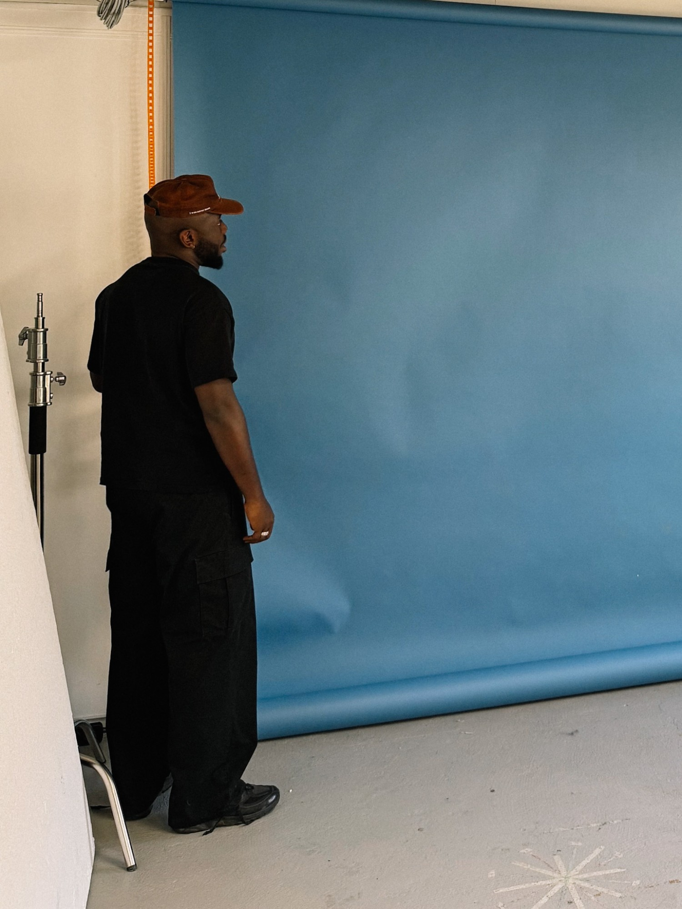

Le photographe
Quatre façons de montrer que c’est toi derrière l’objectif. Elles se combinent : je te conseille A + B, et D en bonus.
Photo, vidéo et direction artistique pour talents, mannequins, comédiens et créatifs. Des images fortes, pensées avec intention.

Le plus efficace : on sait tout de suite qui shoote, avec ses références, sans ajouter de section.
Jay Dogo.
Photographe et directeur artistique, je viens de la mode et du luxe. En séance, je prends le temps : on cherche ensemble, on essaie, on ajuste, jusqu’à l’image qui te ressemble vraiment.
Le plus humain : on te voit au travail, sans poser. Rassure ceux qui n’ont jamais shooté. Ci-dessous la même section avec la version couleur, pour comparer.

Jay Dogo.
Photographe et directeur artistique, je viens de la mode et du luxe. En séance, je prends le temps : on cherche ensemble, on essaie, on ajuste, jusqu’à l’image qui te ressemble vraiment.
Version couleur : le bleu ressort beaucoup à côté des tons crème et bordeaux du site. Le noir et blanc s’intègre mieux.
Shot by Jay DogoLe plus discret : une signature de réalisateur sur la vidéo. Bien en complément, pas suffisant seul.
Vérifie ta demande
Rien n’est débité maintenant.
Je lis chaque demande moi-même et je te réponds sous 24 h. Jay
Le détail qui rend la demande humaine, raccord avec le « Salut Jay » du message envoyé.